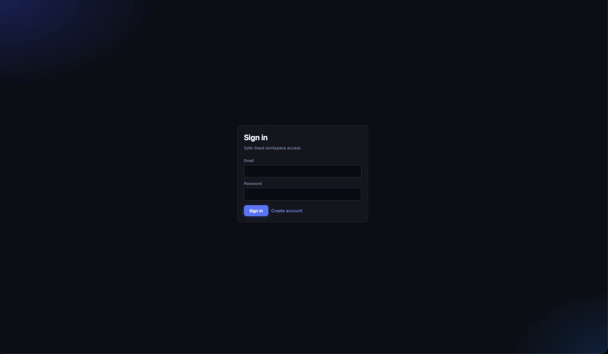
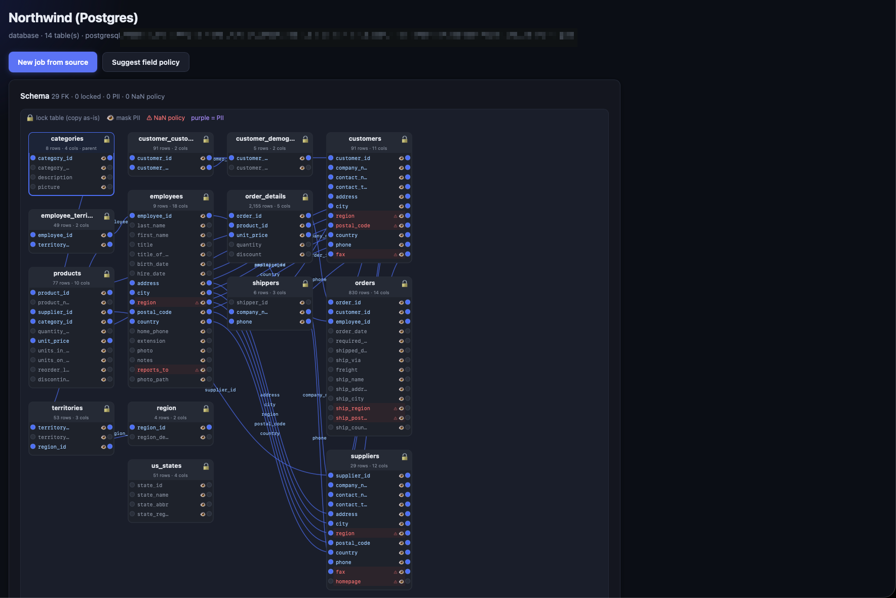
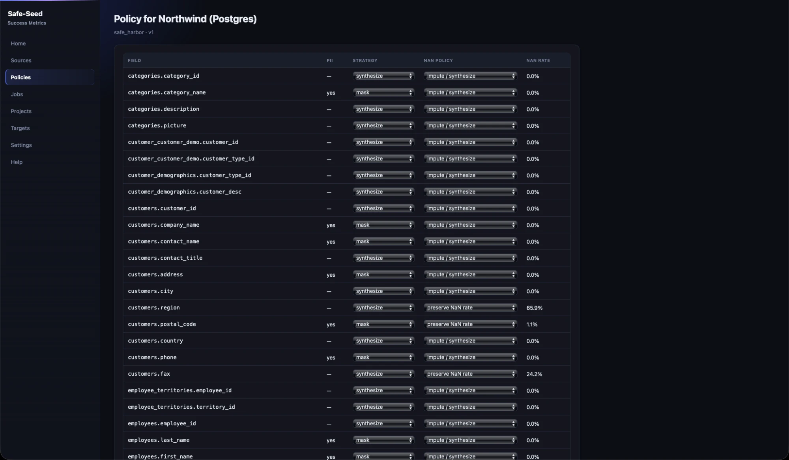
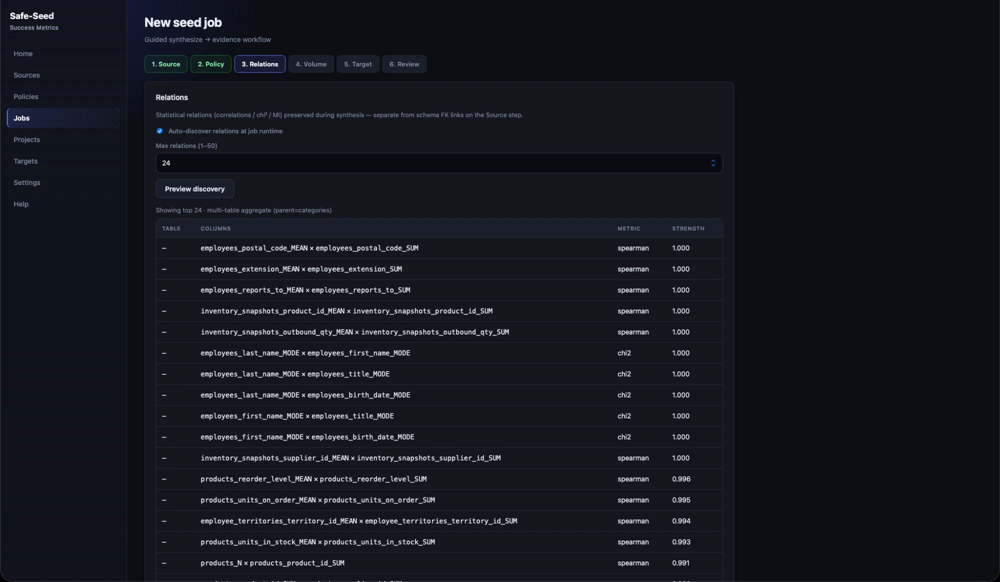
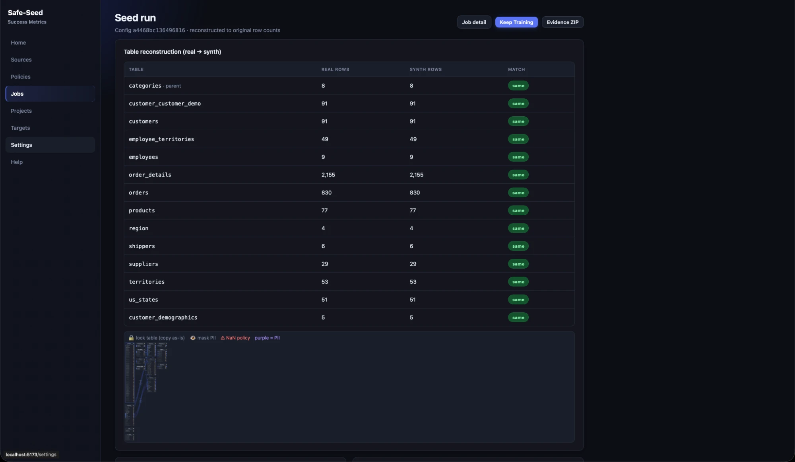
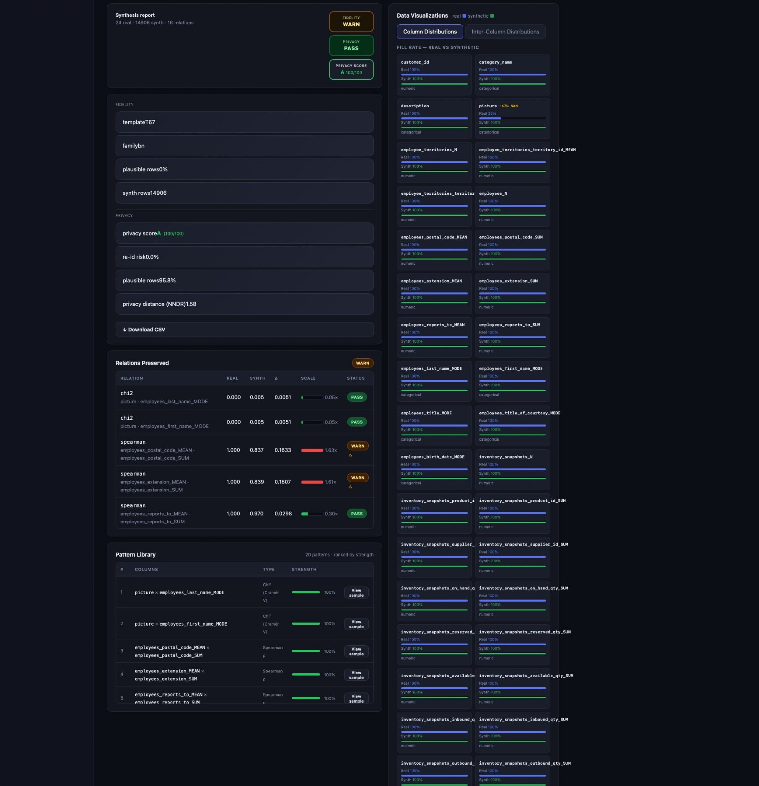
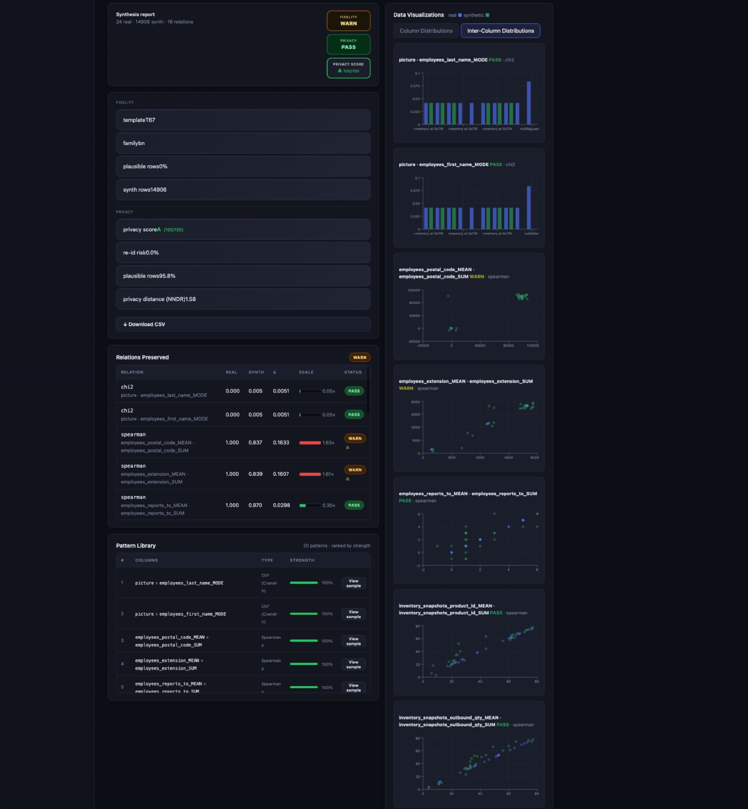

Safe Seed generates relation-preserving synthetic datasets for regulated sandboxes, demos, and analytics. Correlations, multi-table referential integrity, and measurable privacy — so workflows and QA encounter the structure that actually matters.
PHI, PII, and sensitive customer records are locked away from sandboxes, QA environments, demos, and analytics pipelines. Classic generators optimize for column-level realism and break the relationships that make data useful for testing.
Classic generators shuffle columns independently — joins fail, automations error, and data-dependent workflows produce false negatives that aren't bugs.
A statement that data is "anonymized" isn't enough. Reviewers need reproducible PASS / WARN / FAIL metrics they can validate and retain.
Every refresh means another compliance review, another manual scrub, another delay before QA can safely run. There's no durable, repeatable path.
Every Safe Seed run preserves the statistical and relational structure of your source data — so synthetic outputs behave like production in tests, demos, and analytics pipelines.
PII columns masked while preserving stable, usable join keys. Per-run privacy metrics for reviewers and legal — with role separation so inspectors don't mutate sources.
Synthesize parents first, reconstruct children with referential integrity. Locked tables pass through unchanged for mixed real/synthetic environments where some tables should stay untouched.
Per-relation real-vs-synthetic deltas included in every report. Adaptive Keep Training warm-starts from a completed run to deepen fidelity — no full re-run required.
Configurable NaN policies per field — null rates, imputation strategies, and missingness patterns so models and workflows encounter the same incomplete-data reality as production.
Seed Salesforce sandboxes, databases, and flat files — without sending production records into environments that shouldn't hold them.
Three properties that classic generators trade off against each other — Safe Seed treats them as equally non-negotiable.
Safe Seed is designed for teams where data governance isn't optional — evidence packs are built to survive compliance review.
Each Safe Seed job produces a downloadable evidence ZIP containing per-relation privacy metrics, fidelity deltas, config hashes, and run logs. Your compliance, legal, and audit teams get what they need to review and retain — without manual documentation steps.
Upload a CSV, point at a PostgreSQL schema, or connect your Salesforce org. Safe Seed discovers your schema, flags PII candidates, and infers relationships automatically.
Set PII flags, NaN policies, lock tables, and define output volume. Preview a sample run before committing — see privacy metrics and fidelity scores before any data is generated.
Generate synthetic records with referential integrity intact. Download the evidence ZIP for compliance review and seed your sandbox, database, or file — immediately usable.
From sign-in through schema discovery, field policy, and evidence reports — the operator workflow in seven screens.







Connect a Postgres source, import 14 tables, auto-generate a field policy, run synthesis — and get a privacy evidence report.
Full walkthrough · Postgres → 14-table synthesis → privacy & fidelity report